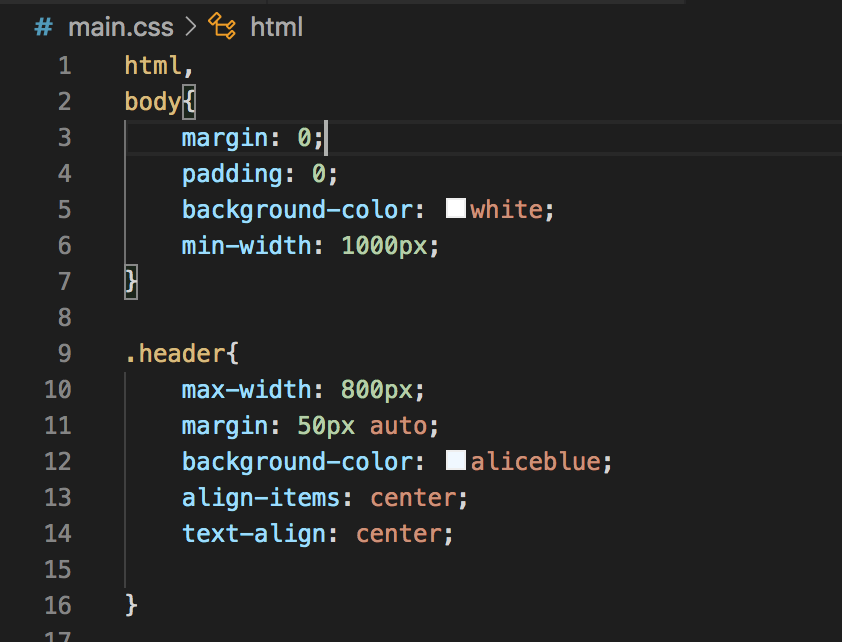
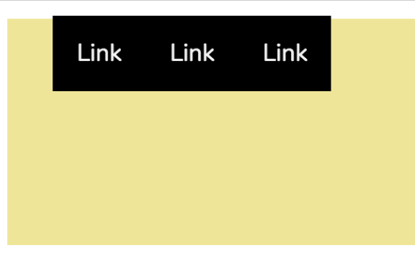
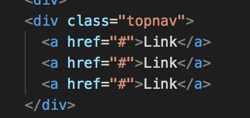
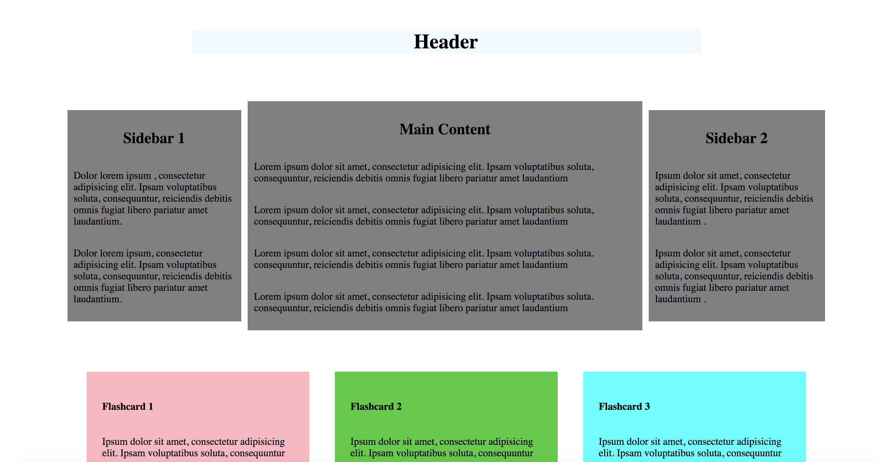
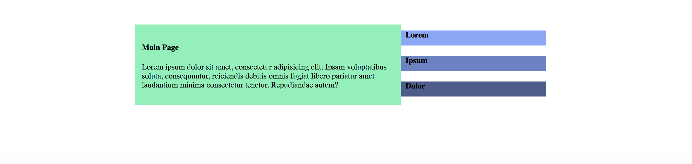
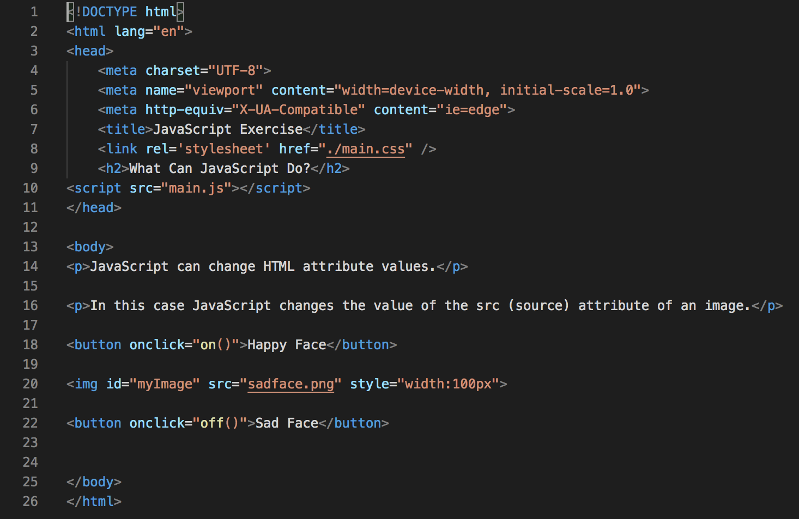
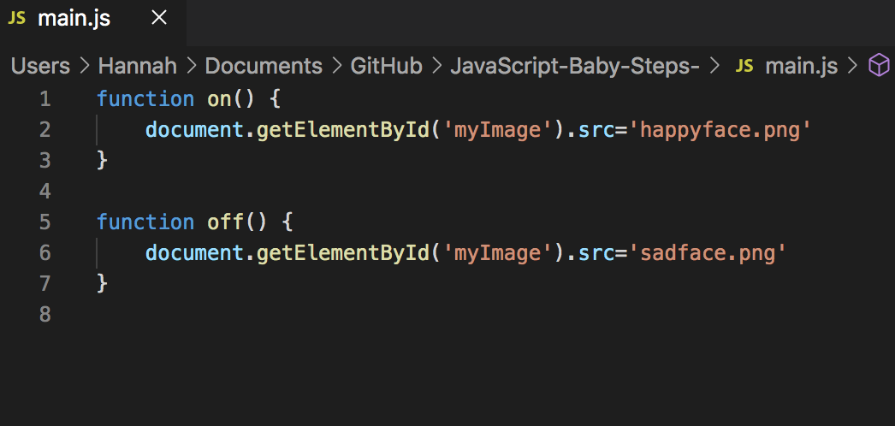
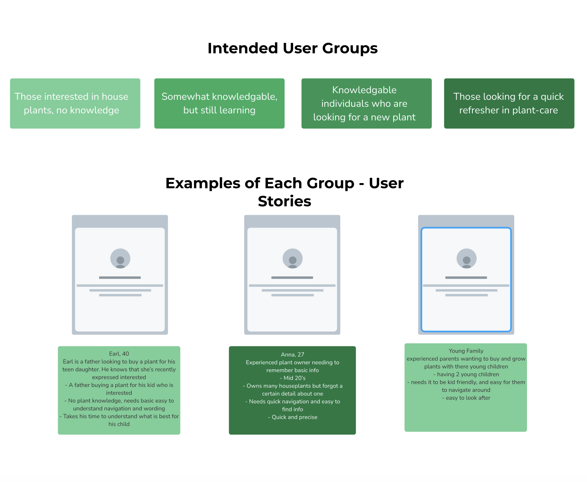
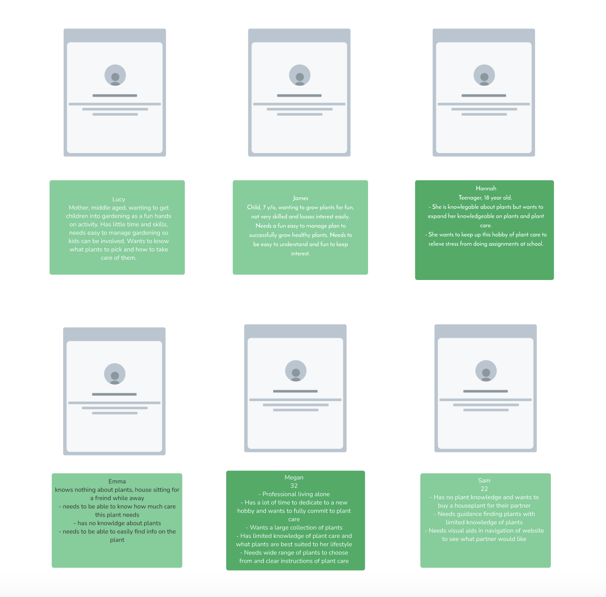
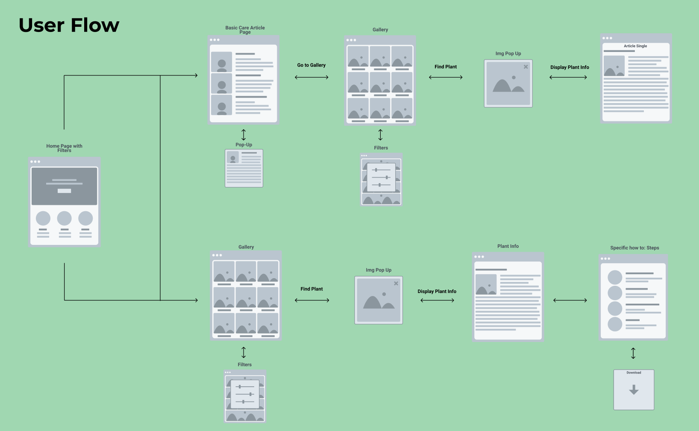

Reflection...
Tutorial 1: WHAT IS HTML AND CSS
Tutorial 2: CSS stylesheet
In today’s tutorial we learnt how to use external CSS style sheets to display elements on HTML. The CSS style sheet creates the lay out of the page whereas HTML shows the content of the page.
Using classes: Using class selector selects elements within a specific class. Within this, specific attributes are given to classes which effects all elements within the class.

Tutorial 3: Links, Navigation and Github
In tutorial 3 we continued to learn how to insert a navigation bar in HTML and linking pages together.
I also did some research on Github and the benefits of this. Git is good for designers that are creating a short notice website prototypes because it speeds up the process and allows people to make changes along the way which are saved to a different repository and can be reversed. This allows individuals in a group to work on the same project at the same time on their own repository and make alterations which can be merged or reversed and do not effect each other. The branching capabilities of git ensure that when changes are made, they are made within a new branch so that this does not affect the master branch code. Git also saves all history of changes made, allowing the designer to go back to previous versions, as they are tracked and saved at each stage in the repository. This is done by committing changes, which saves snapshots of the repository adding it to the history, by committing changes, they are saved individually and can be accessed. This is beneficial for a group of designers as they can work on the project in individual repository’s and see the full history at any time. Distributed development within git means that developers have access to their own repository with a full history of commits, these individual repository’s mean that if there are any damages it will not affect the main production branch. This is beneficial for groups of designers as mistakes do not affect other parts of the project and can be continued to change while it is fixed. Once a branch is completed it can be merged into another repository through pull requests, this allows developers to accept changes and integrate within the rest of the codebase. Thus also lets developers open up a pull request when they are stuck and others can assist in the process. Within a group of designers this allows sharing of work and helping each other making a faster process. These features result in a faster release cycle where changes are pushed through faster and more frequently by developers resulting in faster progress.


Tutorial 4: Figma wireframes
I have used Figma to create wireframes for the blog project, these wireframes will be simple and easy to navigate.
Tutorial 5 & 6: Flexbox and code challenge
In these tutorial we started on a code challenge. The goal was to create a responsive version of the webpage using flexbox and media queries that adheres to the wireframes given. To do this we used flexbox and media query’s.


Assignment 1: progress
Progress on my assignment wireframes for Calico Air. This assignment is to create two sets of wireframes for the airlines that meet customers motivations and needs. For customers who visit the calico air website, the most common needs are to book and browse flights and routes at different prices to a desired destination. This is why it is an important feature of the websites and I have focused on this feature throughout these wireframes.
Tutorial 9: Using JAVA script
This week we began learning about JAVA script, java script allows interactivity in the webpage such as changes. In this activity, we cloned an existing repository and used JAVA script to make our own page with ON/OFF logic.




Tutorial 11: Group project work
We came up with three ideas for our group project.
Our final idea we all agreed on was a informative website on plants and plant care.
Our goal is to create an informative house-plant database that provides both written and visual information on how to perform adequate plant-care. Focusing on the basics of plant-care, this database will allow users to find a plant that is suited to them as well as explore others.
We want to create an accessible, easy-to-understand, fun platform that engages as well as informs a broad range of users.
Aimed at individuals who’s plant knowledge ranges anywhere between none to plant-experts. This site will clearly state the most important basic information intertwined with more experienced knowledge.
Our message is that house-plants are for everybody.
Tutorial 12: User stories and userflow
In this lesson we worked in our groups on our project discussing user stories, we came up with examples for each group and summarized the main outcomes we identified in our user stories. These are what we have identified:
- User Friendly
- Include wide range of plants suitable to all abilities of plant care
- Make sure the website will be easy to use for all ages
- Needs to be understandable, so first timers and those needing a refresher can understand the context.
We then made a user flow diagram to help us decide what we needed to include in our website.


